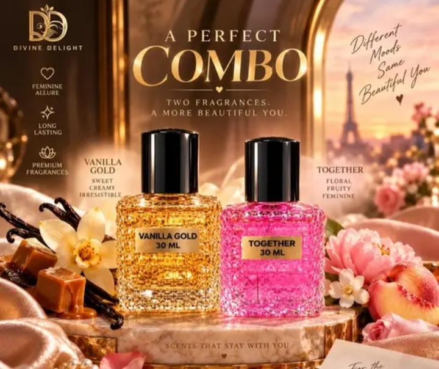
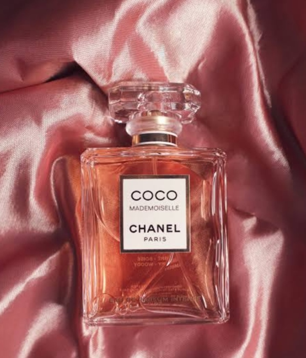

Perfumy brings you exquisite perfumes crafted with finest ingredients, leaving a captivating and long-lasting fragnance where ever you go.
Discover Perfumy, where luxury meets aroma. Our exclusive collection blends elegance and charm to make every moment unforgettable.

Perfumy redefines luxury with signature perfumes that blend rich aromas, modern elegance, and lasting freshness for every personality.
Perfumy is not just a perfume, it is a personality.It is the invisible signature you leave behind long after you have left the room.We started perfumy with a simple question.Why should luxuey fragnances cost a fortune and skill fade in two hours?We wanted to create something better.Something long-lasting, luxurious, and affordable for everyone in India. Perfumy is a simple and attractive perfume shopping website developed using HTML and CSS. The main objective of this project is to create a user-friendly platform where customers can explore different types of perfumes and learn about their features. This project focuses on developing a clean website layout with an appealing design and easy navigation.The website includes important sections such as a navigation bar, search bar, product display, About Us section, and Contact Us section. The navigation bar helps users move through the website easily, while the search bar provides a convenient way to look for perfumes. The product section displays perfume images along with short descriptions, making the website more attractive and informative.HTML is used to structure the content of the website, including headings, paragraphs, images, and other elements. CSS is used to improve the appearance of the website by adding colors, backgrounds, borders, spacing, and attractive layouts. These technologies work together to create a responsive and visually appealing design.This project helps beginners understand the fundamental concepts of frontend web development. It also provides practical experience in designing webpages, organizing content, and applying CSS styling techniques.Overall, Perfumy is a beginner-friendly frontend development project that demonstrates how HTML and CSS can be combined to build a simple perfume shopping website. It serves as a foundation for developing more advanced e-commerce websites with additional features in the future.
+91-7896543215
perfumy@gmail.com
Perfumy is a simple and attractive perfume shopping website developed using HTML and CSS. The main objective of this project is to create a user-friendly platform for exploring different perfume products. The website includes a navigation bar, search bar, product section, About Us, and Contact Us sections. HTML is used to structure the webpage, while CSS enhances its appearance through colors, layouts, and styling. This project helps beginners understand the fundamentals of frontend web development, webpage designing, and content organization. Overall, Perfumy provides practical experience in building an attractive, responsive, and well-structured website using basic web technologies.